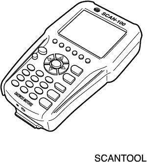

SECCIÓN 8B
SISTEMA DE RETENCIÓN SUPLEMENTARIA (SIR)
Precaución: Desconecte el cable negativo de la batería antes de desmontar o instalar cualquier unidad eléctrica o cuando exista la posibilidad de que una herramienta o equipo pueda entrar en contacto con bornes eléctricos expuestos. La desconexión de dicho cable ayudará a evitar lesiones personales y daños al vehículo. La llave de contacto debe estar en posición LOCK a menos que se indique lo contrario.
ESPECIFICACIONES
Especificaciones generales
| Aplicación | Descripción |
| Tiempo de despliegue del sistema del airbag | <20 ms |
| Tiempo de detección | <5 ms |
| Temperatura de funcionamiento | -40°C~+85°C |
| Temperatura de almacenamiento | -40°C~+90°C |
| Gama de tensiones | 9~16 V |
| Consumo de corriente | 5 ms después de haber girado la llave de contacto a la posición ON <1A 5 ms - 5 seg<300 mA, después de 5 seg<100 mA |
| Gama de aceleraciones | +/- 50 g |
| Aceleración máxima | +/- 600 g impulso |
| Rampa de tensión | 0,2~2,0 V/s |
| Reserva de energía | 150 ms después de la desconexión de la batería |
| Energía de encendido del inflador | 4,3 mj |
| Resistencia del cebo | 2.15 +/- 0.35Ω |
| Tiempo de encendido de la luz de aviso del airbag (con la llave de contacto en ON) | 6 seg |
Especificaciones de apriete
| Aplicación | N•m | Árbol de transmisión izquierdo | Articulación |
| Tornillos de fijación del muelle en espiral | 3 | - | 27 |
| Tornillos de fijación del módulo del airbag del conductor | 11 | - | 97 |
| Tornillos de fijación del módulo del airbag del pasajero | 8 | - | 71 |
| Tornillos de fijación del módulo de control del airbag (SDM) | 10 | - | 89 |
HERRAMIENTAS ESPECIALES
TABLA DE HERRAMIENTAS ESPECIALES

 
| Scanner |
DIAGRAMAS DE ESQUEMAS Y DIRECCIONES
Diagrama electrónico del sistema de retención suplementario(SIR)
Localizador de componentes SIR
- Módulo de airbag del conductor
- Muelle de reloj
- Módulo de control del airbag (SDM).
- Módulo de airbag del pasajero
- Módulo del airbag lateral
- Sensor del airbag lateral
DIAGNÓSTICO
Código de avería (DTC)
Cuando el módulo de control del airbag (SDM) detecta una avería, enciende el indicador de aviso del airbag y almacena los códigos de diagnóstico de averías (DTCs).
La comprobación del sistema de diagnóstico del sistema de sujeciones suplementarias inflables (SIR) debe ser siempre el punto de partida del diagnóstico de dicho sistema. La comprobación del sistema de diagnóstico revela los códigos de diagnóstico de averías (DTCs) mediante el empleo de un scanner. Comprueba asimismo si funciona correctamente la luz de aviso del airbag.
Los dos tipos de DTCs que se pueden registrar son los siguientes:
- DTCs activos que representan fallos de funcionamiento detectados durante el ciclo de encendido actual. Los DTCs activos se almacenan en la memoria de acceso aleatorio (RAM).
- DTCs históricos que representan fallos de funcionamiento detectados desde la última vez que se borró la memoria del historial. Los DTCs históricos se almacenan en la memoria programable de sólo lectura borrable electrónicamente (EPROM).
Tabla de códigos de diagnóstico de averías
| DTC | Descripción |
| 1 | La resistencia del circuito de despliegue del airbag del conductor es alta |
| 2 | La resistencia del circuito de despliegue del airbag del conductor es baja |
| 3 | El circuito de despliegue del airbag del conductor está derivado a masa |
| 4 | El circuito de despliegue del airbag del conductor está en cortocircuito con la alimentación de corriente |
| 5 | La resistencia del circuito de despliegue del airbag del pasajero es alta |
| 6 | La resistencia del circuito de despliegue del airbag del pasajero es baja |
| 7 | El circuito de despliegue del airbag del pasajero está derivado a masa |
| 8 | El circuito de despliegue del airbag del pasajero está en cortocircuito con la alimentación de corriente |
| 9 | La resistencia del circuito de despliegue del pretensor del cinturón del conductor es alta |
| 10 | La resistencia del circuito de despliegue del pretensor del cinturón del conductor es baja |
| 11 | El circuito de despliegue del pretensor del cinturón del conductor está derivado a masa |
| 12 | El circuito de despliegue del pretensor del cinturón del conductor está en cortocircuito con la alimentación de corriente |
| 13 | La resistencia del circuito de despliegue del pretensor del cinturón del pasajero es alta |
| 14 | La resistencia del circuito de despliegue del pretensor del cinturón del pasajero es baja |
| 15 | El circuito de despliegue del pretensor del cinturón del pasajero está derivado a masa |
| 16 | El circuito de despliegue del pretensor del cinturón del pasajero está en cortocircuito con la alimentación de corriente |
| 23 | Tensión de la batería alta |
| 24 | Tensión de la batería baja |
| 25 | Fallo de la luz de aviso del airbag |
| 31 | Fallo interno en el módulo de control del airbag (SDM) |
| 32 | Registro de inflados del airbag por colisión frontal |
| 33 | Registro de inflados del airbag lateral del conductor por impacto lateral |
| 34 | Registro de inflados del airbag lateral del pasajero por impacto lateral |
| 35 | Registro de disparos de los pretensores de los cinturones |
| 52 | La resistencia del circuito de despliegue del airbag lateral del conductor es alta |
| 53 | La resistencia del circuito de despliegue del airbag lateral del conductor es baja |
| 54 | El circuito de despliegue del airbag lateral del conductor está derivado a masa |
| 55 | El circuito de despliegue del airbag lateral del conductor está en cortocircuito con la alimentación de corriente |
| 56 | La resistencia del circuito de despliegue del airbag lateral del pasajero es alta |
| 57 | La resistencia del circuito de despliegue del airbag lateral del pasajero es baja |
| 58 | El circuito de despliegue del airbag lateral del pasajero está derivado a masa |
| 59 | El circuito de despliegue del airbag del pasajero está en cortocircuito con la alimentación de corriente |
| 80 | El bucle del sensor del airbag lateral del conductor está en cortocircuito con la alimentación de corriente |
| 81 | El bucle del sensor del airbag lateral del conductor está derivado a masa |
| 82 | Error de comunicación del sensor del airbag lateral del conductor |
| 83 | Fallo del sensor del airbag lateral del conductor |
| 84 | El bucle del sensor del airbag lateral del pasajero está en cortocircuito con la alimentación de corriente |
| 85 | El bucle del sensor del airbag lateral del pasajero está derivado a masa |
| 86 | Error de comunicación del sensor del airbag lateral del pasajero |
| 87 | Fallo del sensor del airbag lateral del pasajero |
Diagnóstico de herramientas de exploración
El scanner puede efectuar la lectura de los datos serie desde el terminal 13 del conector de diagnóstico (DLC). El scanner se utiliza para leer los códigos de diagnóstico de averías (DTCs) y para borrar algunos de ellos una vez efectuada la reparación. Por diseño, el DTC 51 no puede borrarse. El DTC 61 tampoco puede borrarse para el ciclo de encendido una vez que el SDM ha detectado el DTC.
Para utilizar el scanner, gire la llave de contacto a la posición OFF, conéctelo al DLC y gire la llave de contacto a la posición ON .
Siga las instrucciones del manual del scanner. El SDM envía datos serie desde su terminal 9 al terminal 13 del DLC.
Comprobación del sistema de diagnóstico SIR
Aviso: Si el interior del vehículo se ha visto expuesto a la filtración de mucha agua, como goteras, conducción por aguas profundas, inundación u otras causas, es probable que tenga que sustituir el módulo de control del airbag (SDM) y su conector. Con la llave de contacto en posición OFF, revise el área alrededor del SDM, incluida la alfombrilla. Si hay señales evidentes de inundación o inundaciones anteriores, se debe eliminar el agua, reparar los daños producidos y sustituir el SDM y su conector. Antes de intentar cualquiera de estas reparaciones, debe desactivarse el sistema de sujeciones suplementarias inflables (SIR). Consulte los apartados "Desactivación del sistema de sujeciones suplementarias inflables (SIR)" y "Módulo de control del airbag (SDM)" de esta sección para tener más instrucciones sobre cómo desactivar el SIR y sustituir el SDM.
La comprobación del sistema de diagnóstico del SIR debe ser el punto de partida de cualquier diagnóstico del SIR. La comprobación del sistema de diagnóstico revela los códigos de diagnóstico de averías (DTCs) mediante el empleo de un scanner. Los procedimientos de diagnóstico utilizados en esta sección están diseñados para encontrar y reparar las averías del SIR. Para obtener los mejores resultados, es importante emplear las tablas de diagnósticos y seguir la secuencia indicada a continuación.
- Efectúe la comprobación del sistema de diagnóstico del SIR, que revela los códigos de diagnóstico de averías (DTCs) por medio de un scanner. Comprueba asimismo si funciona correctamente el indicador del airbag.
- Consulte la tabla de diagnóstico correspondiente como se indica en la comprobación del sistema de diagnóstico del SIR. La omisión de estos procedimientos puede llevar a un mayor tiempo de diagnóstico, a un diagnóstico incorrecto y a la sustitución incorrecta de piezas.
- Repita la comprobación del sistema de diagnóstico del SIR después de cualquier reparación o de haber realizado los procedimientos de diagnóstico para asegurarse de que la reparación se ha hecho correctamente y de que no existe ningún otro fallo.
Descripción del circuito
Cuando se gira por primera vez la llave de contacto a la posición ON, se suministra una tensión de encendido desde el fusible del airbag para detectar el SDM en el terminal de entrada 5. El SDM responde haciendo parpadear la luz indicadora del airbag siete veces y apagándola después, mientras el SDM efectúa comprobaciones en el SIR.
Ayudas para el diagnóstico
El orden en que se diagnostican los DCTs es muy importante. La no realización del diagnóstico de los DTCs en el orden especificado puede aumentar el tiempo de diagnóstico y llevar a una sustitución incorrecta de piezas.
Comprobación del sistema de diagnóstico SIR
Precaución: El módulo de control del airbag (SDM) puede mantener suficiente tensión para desplegar los airbags y pretensores durante 1 minuto después de que se haya girado la llave de contacto a la posición OFF y se haya retirado el fusible. Si los airbags y los pretensores no están desconectados, no comience las labores de mantenimiento hasta que haya transcurrido un minuto desde la desconexión de la alimentación de corriente al SDM. De lo contrario, podrían producirse lesiones personales.
Precaución: Durante el procedimiento de servicio, tenga cuidado al manipular el SDM. No golpee ni haga vibrar nunca el SDM. No suministre nunca corriente al sistema de sujeciones suplementarias inflables (SIR) hasta que el SDM no esté rígidamente sujeto al vehículo. Para garantizar un funcionamiento correcto del SIR, deben apretarse cuidadosamente todos los tornillos de fijación del SDM y la flecha de este módulo debe quedar orientada hacia la parte delantera del vehículo. El SDM puede activarse si recibe corriente cuando no está bien fijado al vehículo, lo que puede provocar un despliegue inesperado del airbag y posibles lesiones.
| Paso | Medida | Valor(es) | Sí | No |
| 1 | - Gire la llave de contacto a la posición ON.
- Observe el indicador del airbag cuando se gire la llave de contacto a la posición ON. ¿Parpadea el indicador siete veces?
| - | Sistema OK | Vaya al Paso 2 |
| 2 | - Gire la llave de contacto a la posición LOCK y quite la llave.
- Enchufe el scanner al conector de diagnóstico (DLC). Siga las instrucciones del manual del scanner.
- ¿Muestra el scanner algún DTC?
| - | Ir al procedimiento de comprobación del DTC | Vaya al Paso 3 |
| 3 | Compruebe el fusible F1 en la caja de fusibles interior. ¿Está fundido el fusible F1? | - | Vaya al Paso 4 | Vaya al Paso 5 |
| 4 | Sustituya el fusible F1. | - | - | - |
| 5 | - Desenchufe el conector C207.
- Compruebe el cortocircuito del cableado entre el fusible F1 y el terminal 1 del conector C207.
- ¿Está el cableado en cortocircuito? Entonces, repárelo.
| - | - | Vaya al Paso 6 |
| 6 | - Desenchufe el conector del SDM.
- Desenchufe el conector del SDM.
- Compruebe el cortocircuito del cableado entre el terminal 5 del conector del SDM y el terminal 1 del conector C207.
- Compruebe el cortocircuito del cableado entre el terminal 5 del conector del SDM y el terminal 1 del conector C207.
- ¿Está el cableado en cortocircuito? Entonces, sustituya el cableado del airbag.
- ¿Está el cableado en cortocircuito? Entonces, sustituya el cableado del airbag.
| - | - | Vaya al Paso 7 |
| 7 | - Compruebe el cortocircuito del cableado entre los terminales 13 del DLC y la masa G202.
- ¿Está el cableado en cortocircuito? Entonces, repárelo.
| - | - | Vaya al Paso 8 |
| 8 | - Asegúrese de que la llave de contacto está en la posición ON.
- Compruebe la alimentación del scanner.
¿El scanner recibe la tensión correcta? | 11-14 V | Vaya al Paso 10 | Vaya al Paso 9 |
| 9 | Repare la fuente de alimentación del scanner. | - | - | - |
| 10 | - Compruebe el cortocircuito del cableado o bucle abierto entre el terminal 4 del conector C207 y el terminal 13 del conector de diagnóstico (DLC).
- Compruebe el cortocircuito del cableado o bucle abierto entre el terminal 4 del conector C207 y el terminal 13 del conector de diagnóstico (DLC).
- ¿Está el cableado abierto o en cortocircuito?
- ¿Está el cableado abierto o en cortocircuito?
| - | Vaya al Paso 11 | Vaya al Paso 12 |
| 11 | Repare el cableado. | - | - | - |
| 12 | - Compruebe el cortocircuito del cableado o bucle abierto entre el terminal 4 del conector C207 y el terminal 9 del conector del cableado del SDM.
- ¿Está el cableado abierto o en cortocircuito?
| - | Sustituya el cableado del airbag. | Sustituya el SDM. |
Comprobación integral del módulo de diagnóstico y detección (SDM)
Debe utilizarse la siguiente tabla de diagnóstico cuando se haya visto que todos los circuitos fuera del módulo de control del airbag (SDM) funcionan correctamente, como se indica en la tabla pertinente de códigos de diagnóstico de averías (DTC). En esta tabla se verifica la necesidad de sustituir el SDM.
descripción del circuito
Cuando el SDM reconoce que la tensión de encendido es superior a 9 voltios en el terminal 5 del SDM, el indicador del airbag parpadea siete veces para verificar el funcionamiento. En este momento, el SDM efectúa pruebas al conectar el encendido, seguidas por mediciones de resistencia y pruebas de control continuas.
Cuando se detecta una avería, el SDM activa un DTC actual y enciende el indicador del airbag.
Cuando deje de detectarse el fallo y/o la llave de contacto efectúe un ciclo, el SDM borrará todos los DTC actuales y los moverá a un archivo histórico, excepto los DTCs 32, 33, 34, 35 y 38. Estos DTCs no se borrarán con el scanner porque estos códigos requieren la sustitución del SDM. El SDM debe sustituirse sólo después de que se haya reparado la avería que dio lugar a la activación del DTC.
Comprobación de la integridad del módulo de control del airbag (SDM)
Precaución: El módulo de control del airbag (SDM) puede mantener suficiente tensión para desplegar los airbags y pretensores durante 1 minuto después de que se haya girado la llave de contacto a la posición OFF y se haya retirado el fusible. Si los airbags y los pretensores no están desconectados, no comience las labores de mantenimiento hasta que haya transcurrido un minuto desde la desconexión de la alimentación de corriente al SDM. De lo contrario, podrían producirse lesiones personales.
Precaución: Durante el procedimiento de servicio, tenga cuidado al manipular el SDM. No golpee ni haga vibrar nunca el SDM. No suministre nunca corriente al sistema de sujeciones suplementarias inflables (SIR) hasta que el SDM no esté rígidamente sujeto al vehículo. Para garantizar un funcionamiento correcto del SIR, deben apretarse cuidadosamente todos los tornillos de fijación del SDM y la flecha de este módulo debe quedar orientada hacia la parte delantera del vehículo. El SDM puede activarse si recibe corriente cuando no está bien fijado al vehículo, lo que puede provocar un despliegue inesperado del airbag y posibles lesiones.
| Paso | Medida | Valor(es) | Sí | No |
| 1 | - Gire la llave de contacto a la posición LOCK y quite la llave.
- Conecte todos los componentes del SIR y asegúrese de que todos los componentes están debidamente montados.
- Asegúrese de que la llave de contacto haya estado en la posición OFF durante al menos 30 seg.
- Observe el indicador del airbag cuando se gire la llave de contacto a la posición ON. ¿Parpadea la luz indicadora siete veces?
| - | Borrar los DTCs del SIR e | Vaya al Paso 2 |
| 2 | - Gire la llave de contacto a la posición LOCK y quite la llave.
- Conecte el scanner al DLC. Siga las instrucciones del manual del scanner.
- Gire la llave de contacto a la posición ON.
- Solicite la visualización de los DTCs del SIR con el scanner. ¿El DTC visualizado es el mismo que se había producido previamente cuando se realizó la comprobación del sistema de diagnóstico del SIR?
| - | Vaya al Paso 3 | Ir a la tabla para el DTC indicado. |
| 3 | - Borre los DTCs del SIR.
- Gire la llave de contacto a la posición OFF durante al menos 30 segundos.
- Observe el indicador del airbag cuando se gire la llave de contacto a la posición ON. ¿Parpadea la luz indicadora siete veces?
| - | Sistema OK | Vaya al Paso 4 |
| 4 | - Gire la llave de contacto a la posición LOCK y quite la llave.
- Desconecte el conector del SDM.
- Sustituya el SDM.
- Enchufe el conector del SDM y asegúrese de que todos los componentes estén debidamente montados. ¿Se ha realizado la reparación?
| - | | - |
Activo en marcha y durante el arranque